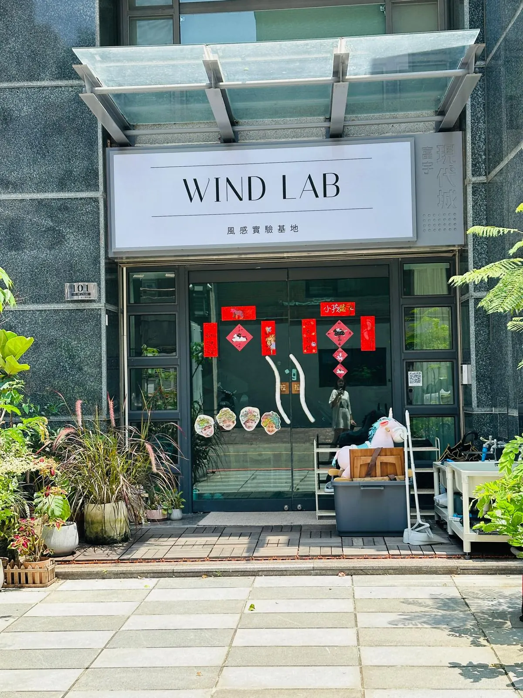
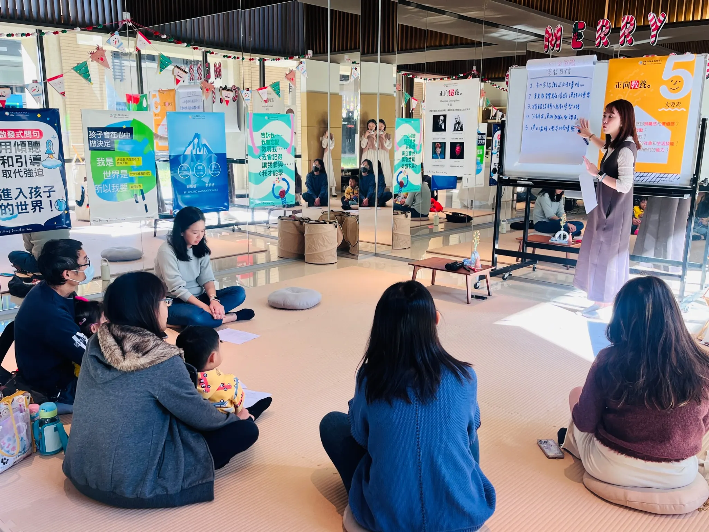
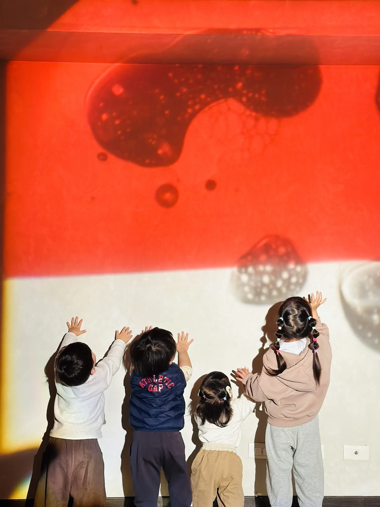
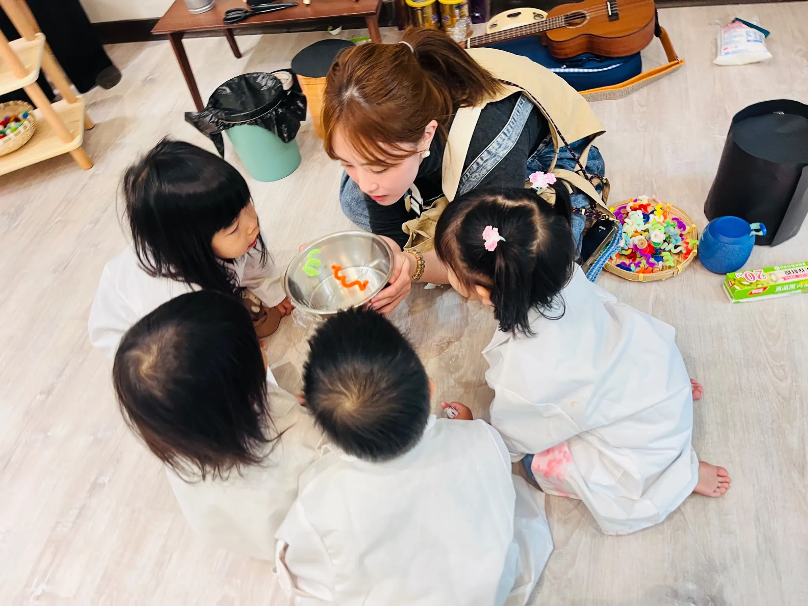

ABOUT MURPHY CHANG
Learning begins
with attention.
I design inquiry-led learning through play, STEAM and Mandarin-medium teaching, with close attention to how each child participates.
notice first, then respond ↘
01 / PRACTICE
The way an adult notices, listens and responds can become part of how a child sees themself.
This belief shapes my curriculum decisions, the materials I offer and the space I leave for children to test an idea before I step in.
HOW MY PRACTICE TOOK SHAPE
A practice built through
trying, listening and revising.
-
01EXPLORE
Many roles, one recurring question.
Before returning fully to education, I worked across A cappella performance, children’s workshops, hospitality, B2B client relationships and AI data projects. Each role taught me to listen, read a room, translate complexity and create with other people.
The path was not linear, but the question underneath it was consistent: how do people come to understand themselves, one another and the world? It led me back to early childhood education—the place where those understandings first take shape.
-
02NOTICE
The teacher is part of the learning environment.
My classroom practice has been rooted in Mandarin-medium teaching. In a mixed-age classroom of twenty children aged two to five, I began rebuilding my teaching language—using words, gesture, materials and relationships to make ideas accessible. I learned that teaching also lives in everyday responses: what we name, what we wait for and how we receive a child’s unfinished idea.
My focus shifted from what children completed to how they entered an experience, what support helped them participate and what their choices might be communicating.
-
03CREATE
Creating room to inquire.
I co-founded Wind Lab and led its educational vision, curriculum design and family engagement. The studio gave me room to test how play and inquiry could make abstract ideas tangible in a small, responsive learning environment.
It also became a way to make an early years teacher’s professional thinking more visible to families—and to build greater continuity between children’s experiences at home and in the learning space, while respecting each family’s context.
Visit Wind Lab on Instagram
A small place built to test a larger educational idea. -
04ARTICULATE
Finding a language for my practice.
Systematic STEAM learning gave me a clearer framework for instincts already present in my teaching: cross-disciplinary inquiry, multiple ways to participate and the importance of making an abstract question perceptible through materials.
My teaching became more intentional, but less attached to one predetermined outcome. I now design different entry points for children to predict, construct, test and revise—planting seeds that may grow beyond one activity.
-
05DESIGN
From planning activities to designing for learning.
Today, I ask more than “What will we do?” I consider how different children might enter an experience, what a gesture or unfinished sentence may be telling me, and whether the most useful teacher move is a question, a material—or time.
My practice brings together curiosity, care and intentional design. I want children to feel that the world is worth investigating, and that I am genuinely investigating it alongside them.

Learning design also means making professional thinking visible to adults.
TEAM OUTCOMES · WIND LAB
What families observed beyond the classroom.
These observations describe the work of Wind Lab’s teaching team, not Murphy Chang’s contribution alone.
- Independence
- Families noticed children learning to dress themselves, open their water bottles and manage everyday routines with growing confidence.
- Expression
- One parent described how a child moved from using only a few words to narrating daily experiences, with emotions becoming easier to regulate through language.
- Courage to try
- A child who initially found unfamiliar outdoor settings difficult gradually became more willing to explore and try new experiences.
Selected from parent surveys · Translated and lightly edited from Chinese · Shared anonymously
A PARENT’S VIEW OF MURPHY
Care that could be felt.
Whenever Murphy spoke about children, her eyes lit up. She was thoughtful, attentive and deeply committed to education.
A MORE PERSONAL FIELD GUIDE
10 things that shape
how I teach.
Not a list of traits—a glimpse at the habits and experiences that show up in my classroom decisions.
- 01

Curiosity is contagious.
When I am genuinely interested, children can feel it. Shared wonder turns a teacher’s question into an invitation.
- 02
I am comfortable saying, “I don’t know yet.”
Not knowing is where investigation begins. I want children to see uncertainty as something we can explore together.
- 03
Music taught me how to listen.
A cappella taught me to hear timing, breath and the spaces between voices—skills I still use in a classroom.
- 04

I think with my hands.
Materials help me understand an idea. I make, rearrange and test before asking children to do the same.
- 05
I notice before I intervene.
A pause gives me evidence: the child’s strategy, the source of frustration and the smallest support that may help.
- 06
I design more than one way in.
Children do not need to learn in identical ways. I plan multiple entry points toward a shared question.
- 07

Everyday life belongs in learning.
A fruit shop, a family story or a familiar object can give a classroom idea somewhere real to land.
- 08

Relationships make brave attempts possible.
Children take intellectual and emotional risks when they trust that uncertainty, mistakes and ideas will be received with care.
- 09“At home, she kept sharing what she had discovered at school.”
Families help me see the whole child.
Family observations reveal how learning travels across places and help me respond with greater continuity.
- 10
My plans are allowed to change.
An unexpected result is not an interruption. It can be the most useful evidence for what should happen next.
CURRENTLY